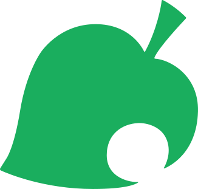

Blathers.app Email MeExperience
Software Developer
Creator and developer of Blathers.app, a web-based game where players identify creatures and characters from the video game Animal Crossing: New Horizons. Features include secure user authentication with signup/login functionality, global scoreboards, and a personal score tracking system.
Software Engineer
Completed an intensive, project-based curriculum covering full-stack web development. Gained hands-on experience building responsive web applications using modern JavaScript frameworks and best practices. Collaborated in agile teams to develop and deploy full-stack applications, following industry-standard version control workflows.
Computer Repair Technician
As a Computer Repair Technician, I specialize in diagnosing hardware and software issues to restore functionality. My expertise includes identifying and sourcing replacement components from various vendors, determining software requirements, and ensuring hardware compatibility for specialized systems. I maintain detailed documentation of machine service tags and repairs to identify patterns and enhance operational efficiency.
Technical Support Analyst
Delivered comprehensive technical support and training to end-users while ensuring 100% resolution within SLAs through effective team coordination. Proactively monitored system stability and performed preventative maintenance to minimize service disruptions. Enhanced team performance through strong communication and collaborative problem-solving approaches.